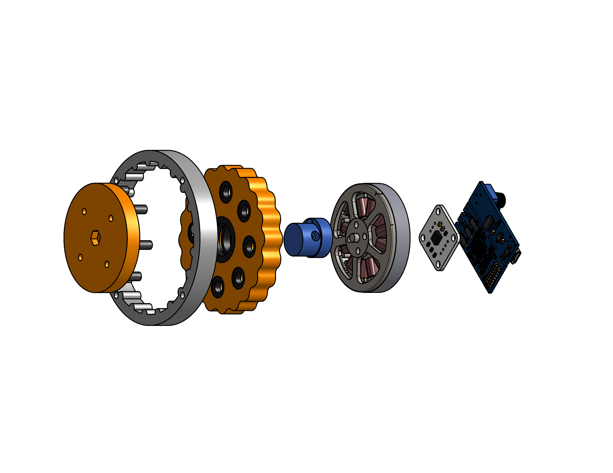

Selected work
Projects
[Write a short introduction to your projects]

Custom BLDC Robot Joint
I’m building a compact BLDC robot joint from the motor control up.

MSP430 Development Board
A custom development board designed from schematic through PCB layout.
FIRMWARE PREVIEW
STM32 Bare Metal
Hands-on STM32 firmware experiments focused on the hardware beneath the code.
ROBOTICS PROJECT
Autonomous / IoT Robot Car
An autonomous and IoT-connected robot car built for ECE 306 at NC State.
AUTOMATION CONCEPT
Sidekick Automation
Reconfigurable benchtop automation for repetitive manufacturing tasks.
ROBOT ARM PROJECT
3D-Printed Servo Robotic Arm
A hands-on servo-driven robotic arm built with 3D-printed parts.